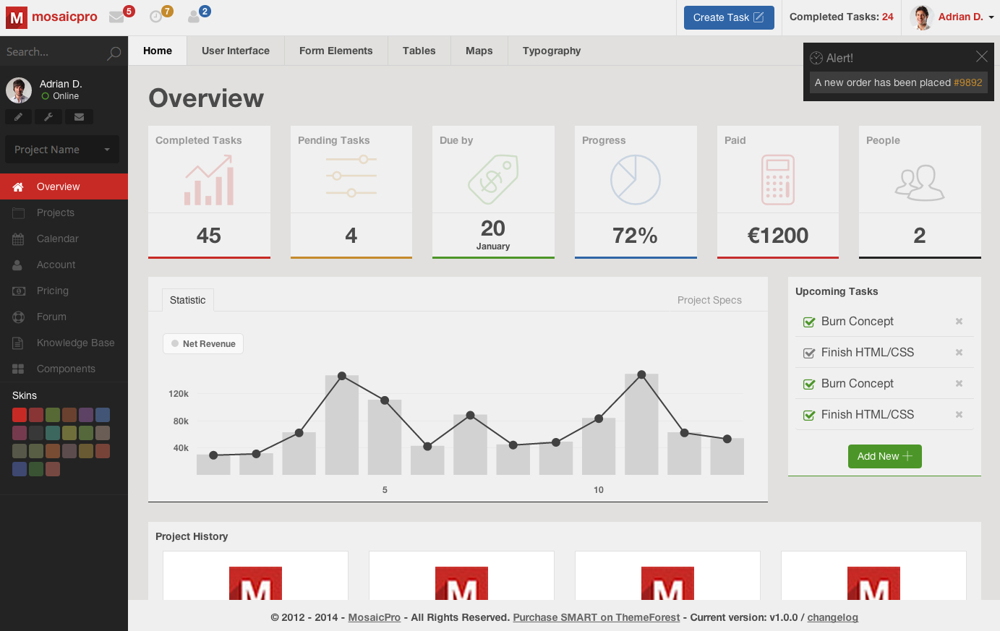

This is an example page that loads strictly the minimal core styles & scripts required by SMART and the guide.1.getting-started-html.overview component
SMART is a FLAT admin template on which we worked extensively to get a SMART admin that works on any modern browser, was tested out on various devices and is fully responsive adapting to any screen resolution.
